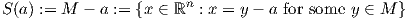
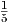

for scalars z. Show that the nonlinear program
is equivalent to a linear programming problem.
Solution:
We introduce variables y ∈ ℝm to represent each of the summands. We let e denote the vector of
ones in ℝm. The ith row of the matrix A ∈ ℝm×n is the vector ai, i = 1,…,m. The problem can
then be written as the following equivalent linear program

where x ∈ ℝn and y, z ∈ ℝm.
Solution:
Consider two points x1 and x2 in C. We have y1 := Ax1 ∈ S and y2 := Ax2 ∈ S, from the
definition of C. Let z = λx1 + (1 - λ)x2 for some λ ∈ (0,1). We show that z is also in
C.
Note that
since S is convex. Hence z ∈ C.
- Let a be a point in M. Show that the set
 is a subspace of ℝn. (Hint: An affine combination of points a1,...,ak is a point z = ∑ i=1kλiai with ∑ i=1kλi = 1. You may assume that a set is affine if and only if every affine combination of points in the set is also in the set.)
- Let a and b be two points in M. Show that the two subspaces S(a) and S(b) are identical.
Solution:
- Let u,v ∈ S(a). Let λ,μ ∈ ℝ. To show S(a) is a subspace, it suffices to show that
λu + μv ∈ S(a). From the definition of S(a), there exist two points w,z ∈ M with u = w - a
and v = z - a. We have
with g = λw + μz + (1 -λ-μ)a. Note that g is an affine combination of the three points w, z, and a, which are all in M, so g ∈ M. It follows that λu + μv ∈ S(a), so S(a) is a subspace.
- Let u ∈ S(a), so u = x - a for some x ∈ M. We show u ∈ S(b):
with y = x - a + b. Since y is an affine combination of points in M, we have y ∈ M, and so u ∈ S(b).
Thus, S(a) ⊆ S(b). Similarly, S(b) ⊆ S(a), so the two sets are equal.
Let x :=  ∑ i=15xi. Use the method given in the proof of Carathéodory’s theorem to express x as a convex combination of three of the points x1,…,x5.
Solution:
Initially, λi = for i = 1,…,5. We have xj - x1 = xj for j = 2,…,5. Taking μ2 = μ3 = 0, μ4 = 1,
μ5 = 2 and then μ1 = -3 gives
With α = , we have λi - αiμi ≥ 0 ∀i and λ5 - αμ5 = 0. The updated convex combination is
Taking μ2 = -1, μ3 = 1, μ4 = -1 and then μ1 = 1 gives an appropriate combination of the four remaining vectors. Choosing α = gives the convex combination
which only uses three of the points. As a check, all three expressions give x = (1,- )T .
)T .
Note: there are many other possible solutions. For example, we have

Solution:
For the first result, let x ∈ conv(S1 ∩ S2), so
for positive multipliers λi satisfying ∑ i=1nλi = 1 and points xi ∈ S1 ∩ S2. Since each xi ∈ S1 and xi ∈ S2, we immediately get that x ∈ conv(S1) and x ∈ conv(S2), so x ∈ conv(S1) ∩ conv(S2).
For the counterexample, it suffices to take n = 1. Let S1 = {0,2} and S2 = {1,3}. Then conv(S1 ∩ S2) = conv(∅) = ∅, but conv(S1) ∩ conv(S2) = [1,2].